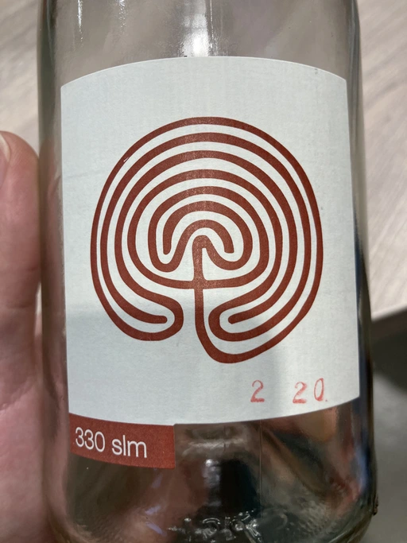

- Type
- White Sparkling, Brut nature
- Producer
- Costadilà
- Vintage
- 2019
- Location
- Italy, Vino (IT)
- Grapes
- Glera
- Alcohol
- 10.5
- Sugar
- 2
- Price
- 630 UAH, 590 UAH
- Cellar
- N/A
Producer
Ernesto Cattel is one of the first people that started to restore popularity of Col Fondo, e.g. ancestrale method, which differs from Pet Nat by having second fermentation in the bottle and with no filtration. And to make it even more interesting, his Col Fondo is macerated!
Ratings
2021-01-15 - 7.00
Yet another great non-demanding bubbles bottle. Kombucha, lemon tart and merenga. Tasty, fresh with long zesty aftertaste.
2021-02-10 - 7.00
Great and friendly col fondo. QPR is questionable, but enjoyment is real. Lemon cake, with yeasty kombucha-like palate. Fresh and easy going. Because even during heavy snows heart is filled with summer thoughts.